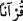
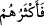

dışı bir dilde olduğunu söylerse, kâfir sayılır. Çünkü bu, (
) ifâdesine aykırılık
arzetmektedir. Arapça dışından olup da sonradan Arapçalaşmış bir kelimenin
Kur’an’da bulunması ise onu Arapçalıktan çıkarmaz; zîrâ ‘daha çok’ olana itibar edilir.
Sözgelimi: (
) aslen Rumca olup terazi mânâsında Arapçalaşmıştır; (
) Farsça
olup “seng” ve “kil”in Arapçalaşmışıdır; “salevât” (Hacc 23/40) İbrânîce olup
musallâ/ibadet yeri ve tapınak anlamındaki “salûtâ” (
)’nın Arapçalaşmışıdır; “
/rakìm” Rumca olup “köpek” mânâsındadır; “tûr” Süryanîce dağ mânâsındadır.
Kendi dillerinde geldiği için içerdiği mânâları“bilen” Arap “bir kavim için”
Bu ifâde de (
) kelimesinin başka bir sıfatıdır.
Yine et-Te’vîlâtü’n-Necmiyye’de der ki: “Bilen bir kavim için” demek, Arapça’yı
bilen bir kavim için demektir. Arapça, harfleri itibariyle mahlûktur; Kur’an ise bundan
münezzehtir.
4. Bu kitap müjdeleyici ve uyarıcıdır. Fakat onların çoğu yüz çevirdi. Artık
dinlemezler.
“Bu kitap müjdeleyici ve uyarıcıdır.”
Bu ifâde “Kur’an”ın bir sıfatıdır. Kadrini bilip hakkını vererek kendisini tasdik
edenler için cenneti ve vusûlü/Allah’a ermeyi müjdeleyen, kadrini bilemeyip hakkını
vermeyerek tekzîb edenleri de ateş ve firak Allah’tan ayrı kalmak ile uyaran bir kitaptır.
Veya iştiyak ve arzu ile Allah’a yönelenleri müjdeleyici, kendi nefsine yönelip keyfine
bakanları ise uyarıcı bir kitaptır. Yahut Allah dostlarına çeşitli makam ve mertebelere
ermeyi müjdeleyen ve yine bu zatları, bulundukları dereceleri kaybedebilecekleri için
muhâlefet etmemeleri konusunda uyaran bir kitaptır. Ve yahut ümid (recâ) mütâlaasıyla
hareket edenleri müjdeleyen korku (havf) mütâlaasıyla hareket edenleri de uyaran bir
kitaptır. Ve yahut da isyankâr müminleri mağfiret ve şefâatle müjdeleyen, itâatkârları da
Rahman’a karşı dâima edep ve erkân üzere davranarak gevşeklik göstermesinler diye
uyaran bir kitaptır. Yahut da bizim bizzat seçip tasfiye ettiğimiz kimseleri müjdeleyici,
bizzat saptırdığımız;kendileri saparlarken yardım etmeyerek yüzüstü bıraktığımız
kimseleri de uyarıcı bir kitaptır.
“Fakat onların” yani Mekkelilerin veya Arapların yahut da müşriklerin “çoğu”
Kur’an kendi dillerinde olmasına rağmen, onun hakkında derin derin düşünmekten “yüz
çevirdi.”
Aşağıda gelecek olan “Yazıklar olsun bu müşriklere!” âyeti,
)) ifâdesindeki (
) zamirinin “müşriklere” râci olduğunu gösterir.
“Artık” düşünmeyi amaçlayan, ince eleyip sık dokuyan bir kulak verişle